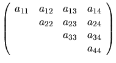
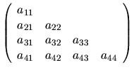

The default scheme for storing matrices is the obvious one described in subsection 5.1.6: a matrix A is stored in a two-dimensional array A, with matrix element aij stored in array element A(i,j).
If a matrix is triangular
(upper or lower, as specified by
the argument UPLO), only the elements of the relevant triangle
are accessed. The remaining elements of the array need not be set.
Such elements are indicated by  in the examples below.
For example, when n = 4:
in the examples below.
For example, when n = 4:
| UPLO | Triangular matrix A | Storage in array A |
| `U' |  | |
| `L' |  |
Similarly, if the matrix is upper Hessenberg, elements below the first subdiagonal need not be set.
Routines that handle symmetric or Hermitian matrices allow for either the upper or lower triangle of the matrix (as specified by UPLO) to be stored in the corresponding elements of the array; the remaining elements of the array need not be set. For example, when n = 4:
| UPLO | Hermitian matrix A | Storage in array A |
| `U' | ||
| `L' |